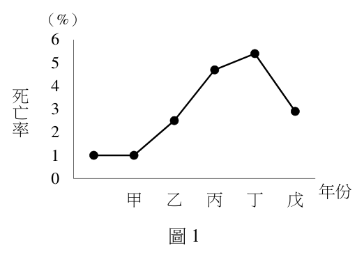
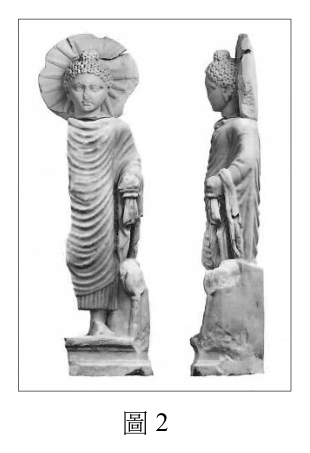
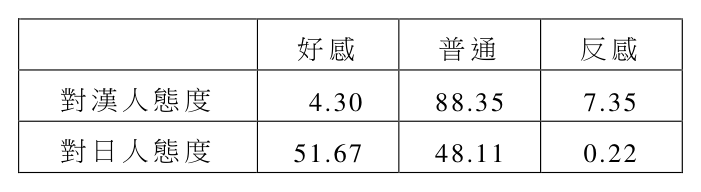

開卷有益 ／
分科測驗 ／ 歷史 ／ 114 年114 年分科測驗歷史試題與答案
這一頁是民國 114 年分科測驗歷史的整份歷屆試題，共 44 題，題目與標準答案出自大考中心 分科測驗歷年試題（依著作權法 §9，考試試題不受著作權保護），其中 44 題附有詳解。以下逐題列出題幹、選項與答案；要計時作答或記錄成績，請用線上練習。
大學入學考試中心原始場次代碼：分科歷史
線上作答這一科 →
全部 44 題
第 1 題
史書描寫臺灣史上某場會議:長老全部出席,在花園的長桌入座後,最高長官和
評議員高坐在石造亭子裡,俯瞰長桌。長官先致歡迎詞,讚揚長老們的與會,
隨後進行各項事務,包括任命新任長老並頒授藤杖,說明學校修業、村落繳付
年貢等事宜。這場會議應是:
（A） 荷蘭時期的地方會議（B） 鄭氏時期的長老會議（C） 清領時期的部落會議（D） 日治時期街庄協議會答案：（A）
詳解與考點 正解：題幹把「最高長官和評議員」、頒授藤杖給長老，以及學校修業、年貢三項事務放在同一場會議中，對應荷蘭東印度公司統合臺灣原住民村社的地方會議制度，故選 A。
B：鄭氏政權雖也面對原住民村社，卻不能由「長老」一詞直接判定。題幹所示的評議員主持、藤杖授權與固定會議儀式，才是與鄭氏治理不同的關鍵。
C：清領時期處理番社多透過土目、通事等中介，並非由最高長官與評議員集會、授予藤杖來確認村社領袖的權威。
D：日治時期的街庄協議會屬近代地方行政的諮詢安排，成員與議題不以原住民長老、年貢及授杖儀式為核心。
本題考點：史料判讀（source interpretation）——同時比對制度角色、儀式物件與行政事務，不可只憑一個名詞判斷時代；荷蘭地方會議（landdag）——看到長老、藤杖與年貢的組合時，判為荷蘭殖民治理；統治象徵（political symbolism）——授予物件可用來辨識權威由殖民政府向下賦予。
第 2 題
朝鮮大臣謂:「自臣出生起,只聞天下有大明天子。胡虜欲將吾國習俗野蠻化,
欲使吾等臣服,自立為天子,實屬貽笑大方之舉。吾國以禮義聞名... ... 」文中
「胡虜」是指:
（A） 滿洲人（B） 越南人（C） 日本人（D） 琉球人答案：（A）
詳解與考點 正解：朝鮮大臣仍稱「天下有大明天子」，並把企圖使朝鮮臣服、自立為天子的征服者稱為「胡虜」，指向明清易代時取代明朝的滿洲人，故選 A。
B：越南並未在此脈絡中取代明朝、要求朝鮮臣服或自立為天下天子。
C：日本曾與朝鮮發生戰爭，但題幹以大明正統對比新興北方征服者的語氣，不是指日本。
D：琉球的政治力量不足以構成取代明朝、要求朝鮮改變習俗的情境。
本題考點：朝貢體系（tributary system）——看到「大明天子」與朝鮮的禮義自述時，先放入東亞朝貢秩序理解；明清易代（Ming–Qing transition）——滿洲政權取代明朝後，朝鮮士大夫對新秩序的抗拒可作為辨識線索。
第 3 題
飲食史學者指出:許多文化會賦予其主食以神聖意義。在美洲,只要是種玉米之處,
當地人會崇拜玉米,視為神聖食品,阿茲特克婦女即須作完贖罪儀式後才敢吃玉米。
十六世紀基督教傳入後,美洲人不能再崇拜玉米,小麥就成為神的食物。這種轉變
最可能的原因是:
（A） 小麥的價格較高,故比原本的玉米更神聖（B） 基督教是征服者信仰,小麥是征服者主食（C） 小麥是舶來的食物,具異國風味與神秘性（D） 哥倫布大交換後,小麥成為全世界的主食答案：（B）
詳解與考點 正解：題幹把十六世紀基督教傳入與「小麥成為神的食物」連在一起，顯示主食的神聖意義隨統治與宗教權威而轉換。基督教是征服者帶來的信仰，小麥又是征服者的主食，因而取代玉米成為新的宗教象徵，故選 B。
A：價格高低不能自行產生宗教神聖性；題幹交代的轉變原因是信仰與殖民權力，不是市場價格。
C：小麥是否舶來只能說明來源不同，不能解釋為何它會被賦予「神的食物」的意義；分辨關鍵在宗教儀式與統治者文化，而非異國感。
D：哥倫布大交換確實促成作物跨洲流動，但各地的主食沒有因此變成同一種作物，且題幹問的是美洲宗教象徵改變的原因。
本題考點：食物象徵（food symbolism）——主食的宗教意義要連同儀式、信仰與社會權威一起判讀；殖民文化支配（colonial cultural dominance）——殖民情境中，統治者的宗教與日常飲食可能重塑被統治社會的價值象徵。
第 4 題
同學整理中國史,發現某時期有三個連續王朝,統治者雖來自不同世族,但相互
聯姻,關係密切。學者指出:這只是政權在同一「集團」不同世族間的易手換位
而已。三個王朝最可能是:
（A） 東晉、宋、齊（B） 北周、隋、唐（C） 北宋、遼、金（D） 蒙元、明、清答案：（B）
詳解與考點 正解：題幹強調三個連續王朝的統治者雖屬不同世族，卻藉聯姻維持同一政治集團內的權力輪替。北周、隋、唐都與關隴貴族集團密切相關，正符合世族間換位而非集團斷裂的描述，故選 B。
A：東晉、宋、齊雖都屬南朝政權脈絡，但不符合題幹所指關隴貴族長期以婚姻與政治網絡輪替掌權的特徵。
C：北宋、遼、金彼此多為並立或對抗的政權，既非連續承接，也不是同一世族集團內的權力交替。
D：蒙元、明、清的建立者與政治基礎差異很大，不能視為同一世族集團透過聯姻所完成的連續輪替。
本題考點：關隴集團（Guanlong group）——遇到北周、隋、唐連續出現且題幹提到世族聯姻時，可用關隴貴族網絡判讀；政治婚姻（political marriage）——世族聯姻不只是家族私事，若與官職和王朝更替並列，常是維繫政治聯盟的線索。
第 5 題
十九世紀,歐洲人開始從金雞納樹的樹皮煉製奎寧來治療瘧疾,並在印尼開闢
種植園,掌握此一重要原料。二十世紀初,臺灣總督府引進金雞納樹,在1930年代
大量生產奎寧,視為戰備物資。總督府生產奎寧最主要的背景是:
（A） 奎寧具商業價值,可以增加財源（B） 促進臺灣的醫學發展與人才培育（C） 臺灣發生嚴重的疫情,需求孔急（D） 發展臺灣製藥業,準備前進南洋答案：（D）
詳解與考點 正解：題幹已給出1930年代、總督府大量生產並視奎寧為「戰備物資」兩個線索。日本統治下的臺灣被納入南進準備與殖民地戰時動員，奎寧可支應熱帶地區行動所需，因此生產奎寧的主要背景是發展製藥能力、準備前進南洋，故選 D。
A：奎寧具有商業價值不假，但「戰備物資」指向軍事與帝國擴張需求，不能把主要背景縮小為一般財源。
B：題幹沒有提到醫學教育、醫療制度或人才培育；製藥生產與培養醫學人才是不同層次的政策目的。
C：若主要原因是臺灣本地爆發嚴重疫情，材料通常會提供流行情況；題幹反而以戰備定位奎寧，指向域外軍事準備。
本題考點：南進政策（southward advance policy）——看到日治後期、熱帶疾病藥物與戰備物資並列時，要連結日本向南方擴張的準備；殖民地戰時動員（colonial wartime mobilization）——殖民地的農業或工業生產若被指定為戰備，應從帝國軍事需求判讀其主要目的。
第 6 題
圖1是依據二十世紀某一時期四川省官方資料繪製的人口死亡率變化圖。圖中縱軸
為死亡率(%),橫軸為年份。從圖中甲年到戊年的變化判斷,這種情況主要是
發生在:(依當時官方推估,死亡率 (%)
正常值是1%) 6
5

（A） 1941至1945年,抗日戰爭期間
4
死（B） 1946至1950年,國共內戰前後 亡 3（C） 1957至1961年,中共大躍進期間 率 2
1（D） 1969至1973年,文化大革命期間
0
年份 甲 乙 丙 丁 戊
圖1答案：（C）
詳解與考點 正解：題幹把人口死亡率與當時官方推估的1%正常值並列，要求從四段時期辨識造成異常死亡的背景。1957至1961正值中共大躍進及其引發的嚴重糧食危機，是四項中能對應此類人口死亡異常的時段，故選 C。
A：抗日戰爭確有戰亂與傷亡，但選項所列時段不是本題以官方死亡率異常所要辨識的大躍進背景。
B：國共內戰前後的政治與軍事衝突不同於大躍進的政策性經濟失衡，不能據此判定。
D：文化大革命造成社會與政治動盪，但時段及其主要機制都不符合本題所指的人口死亡異常。
本題考點：大躍進（Great Leap Forward）——看到1950年代末至1960年代初、中國人口死亡異常的組合線索時，連結大躍進及糧食危機；圖表史料判讀（historical graph interpretation）——先比對數值的基準與異常，再以年代範圍對應歷史事件。
第 7 題
日本防衛廳保存一份文件,標明〈金門島攻略作戰〉,內容報告日本海軍攻占
金門島的情況。軍事行動中,海軍巡洋艦先炮轟金門,繼由陸戰隊登陸,未遇到
太多抵抗。軍事行動三天即告結束,許多金門民眾撤往福建南安一帶避難。有關
這一軍事行動,下列何者符合史實?
（A） 1895年,日本接收臺灣後,攻占金門以鞏固臺灣之防衛（B） 1900年,日本藉八國聯軍,占領金門確保其在福建利益（C） 1931年,九一八事變之後,日本繼續攻占金門以相呼應（D） 1937年,七七事變後,日本攻占金門作為進取廈門跳板答案：（D）
詳解與考點 正解：題幹的海軍炮轟、陸戰隊登陸金門，以及民眾撤往福建南安，顯示這是日本沿中國東南沿海推進的作戰。七七事變後抗日戰爭擴大，日本進取廈門時可將金門作為軍事跳板，故選 D。
A：1895年日本接收臺灣的主要軍事行動不符合題幹所述由金門進取福建沿岸的戰略情境。
B：八國聯軍的軍事焦點在華北與北京局勢，不能用來解釋日本海軍攻占金門並以此連結廈門的行動。
C：九一八事變後日本的侵略重心在中國東北，與題幹所述金門、南安及廈門周邊的海上作戰不相符。
本題考點：全面抗戰（Second Sino-Japanese War）——若材料出現七七事變後日本沿海登陸與擴張，要放回全面抗戰擴大的脈絡判斷；軍事地緣戰略（military geostrategy）——島嶼或港口的軍事意義常在於能否作為進攻鄰近沿岸城市的中繼點。
第 8 題
光緒年間出版的《新增華英通語》序言說:各國語言文字雖有不同,但主要口岸
皆可通行英文。《華英通語》問世已久,可惜舊本錯誤頗多。本書將譯本分門別類,
並作增改。譯音以□□方言為本,閱者一目了然,誠為華英通商之秘笈。文中
□□最可能是哪裡?
（A） 廣東（B） 福建（C） 浙江（D） 山東答案：（A）
詳解與考點 正解：序言把《華英通語》定位為通商口岸使用的英文工具書，並說譯音以某地方言為本。近代早期廣州是中外貿易與華英語言接觸最集中的口岸之一，粵語最符合這類商務英語教材的方言基礎，故選 A。
B：福建也有重要港口，但題幹所述華英通商教材的形成背景，沒有廣州與粵語的商業接觸脈絡強。
C：浙江沿海通商發展重要，卻不是此類早期華英通語以方言標音時最具代表性的基礎。
D：山東不是近代早期華英通商語言教材最主要的方言依據地，與南方海港長期的中外商業交流不合。
本題考點：通商口岸（treaty ports）——判斷近代外語教材的方言基礎時，要先連結其服務的貿易中心與語言接觸地；粵語（Cantonese）——看到華英通商、口岸與方言譯音並列時，可優先考慮廣州商業網絡。
第 9 題
西元前六世紀,希臘哲學家赫拉克利特受米利都學派影響,認為物質性元素是
萬物本源。他主張:萬物皆由「火」構成,經由膨脹或收縮,最後又在火中化解。
事物既對立又統一,並像河流一般流動不停,又如一條起伏不平之路。世界的
發展亦同此理。然而,一切過程都是命運所致。我們應如何理解赫拉克利特學說?
（A） 認為宇宙零亂如一盤散沙,萬物間毫無關聯（B） 相信人的理性和自主性,可克服冥冥的宿命（C） 宇宙和萬物是睿智的上帝在一次創造中形成（D） 突破神話傳說,從物質觀點來解釋宇宙起源答案：（D）
詳解與考點 正解：赫拉克利特以「火」作為萬物本源，並用膨脹、收縮與流動解釋變化，重點是以物質及自然過程說明宇宙，而非訴諸神話故事或創世神。這種從自然元素尋求宇宙原理的做法，故選 D。
A：他主張對立統一與持續流動，仍認為世界具有可理解的原理，不是萬物毫無關聯的散亂狀態。
B：題幹明說一切過程受命運支配，不能據此推成他相信人的理性與自主性足以克服宿命。
C：他的學說以火與自然變化為起點，沒有主張由睿智上帝一次創造宇宙；兩者是不同的宇宙起源解釋。
本題考點：前蘇格拉底哲學（Pre-Socratic philosophy）——看到以水、火等元素追問萬物本源時，要判為以自然原理取代神話敘事的嘗試；自然哲學（natural philosophy）——判讀早期哲學時，重點在它如何用可觀察的變化說明宇宙，而非是否完全否定命運觀。
第 10 題
北宋時期,從宋朝本土到遼國、西夏、金國,從朝鮮、日本、安南到南洋諸國,
從印度、波斯灣到非洲東岸,都發現宋朝銅錢。宋人云:「錢本中國寶貨,今乃
與四夷共用。」當時遼、西夏、金、朝鮮、日本諸國都有宋錢,最主要原因是:
（A） 宋國力強大是各國的宗主國（B） 宋代外貿興盛銅錢流通各國（C） 上述各國並未發行本國貨幣（D） 各國政府規定只能使用宋錢答案：（B）
詳解與考點 正解：材料強調宋錢從東亞、東南亞一路流通到波斯灣與非洲東岸，分布範圍沿著跨區域交易網擴展；這反映宋代對外貿易興盛，使銅錢成為交易中常用的貨幣，故選 B。
A：宋錢外流不等於宋朝是各國宗主國。遼、西夏、金等政權並不因使用宋錢而受宋朝政治統治。
C：外國境內有宋錢，只能說宋錢可被接受使用，不能推出各國完全沒有自己的貨幣。
D：題幹沒有各國政府強制使用宋錢的訊息。貨幣跨境流通的判準在商業往來與信任，不在行政命令。
本題考點：貨幣流通（currency circulation）——外幣廣泛出現時，先從貿易網與交易需求解釋；對外貿易（foreign trade）——物品與貨幣的跨區分布可作為商業交流強度的線索；政治支配與經濟交流——使用某國貨幣不必然表示臣屬關係。
第 11 題
某一時期,政府對如何治理華北出現兩派意見:
甲派主張:「漢人對國家無任何益處,應該將其趕走或殺掉,空出土地成為放牧
之地。」
乙派則說:「應妥善保留漢人原有生產方式,定好徵稅方法。中原的土地稅、商稅、
酒、醋、鹽、鐵、山澤等稅收,每年可得銀五十萬兩、絲絹八萬疋、
粟米四十萬石。」
這最可能是何時的討論?判斷時代的依據為何?
（A） 東漢末年/鹽鐵之稅（B） 五胡時期/粟米之租（C） 宋元之際/放牧之地（D） 明清之交/絲絹之貢答案：（C）
詳解與考點 正解：判準在「將漢人趕走，空出土地成為放牧之地」與保留農耕人口、徵收土地和商業稅的對照。這是遊牧征服者取得華北後，討論把農地改為牧地或利用農耕財政的政策選擇，最符合宋元之際的背景，故選 C。
A：東漢末年雖可見鹽鐵等稅收，但題幹的核心不是稅目本身，而是征服華北後是否將漢人土地改作牧地的爭論。
B：五胡時期同樣有北方族群政權，因而看似接近；但「放牧之地」與完整列舉農耕、商業財政收益的對立，較直接指向宋元之際的治理抉擇。
D：明清之交的選項以絲絹之貢為判準，無法說明將華北農地轉為放牧地的主張。
本題考點：遊牧與農耕財政（pastoralism and agrarian taxation）——看到牧地與稅收收益的取捨時，辨識征服政權如何處理農業人口；時代判斷（historical contextualization）——史料中的政策衝突比單一稅名更能定位歷史情境。
第 12 題
馬關條約簽訂後,日本派遣一個師團接收臺灣,隨軍帶了超過百名通曉北京官話
的通譯人員,俾與臺灣人溝通。這些通譯最可能以何種方式與臺灣人溝通?
（A） 官話不通行於臺灣民間,但能以漢文筆談（B） 臺灣方言保留了中原古音,可以口語溝通（C） 臺灣民間識字率太低,只能夠以口語溝通（D） 臺灣教育普及,多數人可直接用官話溝通答案：（A）
詳解與考點 正解：日本軍所帶的是北京官話通譯，但臺灣民間慣用的口語並非北京官話，兩者不能直接以口語溝通；識字者仍可用共同的漢字書寫進行筆談，故選 A。
B：臺灣方言保留部分古音，不能推出它與北京官話相同。古音特徵不是兩地口語可互通的證據。
C：民間識字率不高不等於完全無法筆談。筆談可由具讀寫能力者作為溝通媒介，不能因此斷言只能口語。
D：1895 年時臺灣並無教育普及到多數人可直接使用官話的條件，且題幹正以通譯隨軍說明語言隔閡。
本題考點：書寫語言與口語（written language and spoken language）——口語互不通時，須另判斷是否存在共用書寫系統；漢文筆談（written communication in Chinese）——判讀近代東亞跨語言交流時，不能把漢字書寫能力等同於官話口說能力。
第 13 題
2023年4月,埃及考古隊在紅海西岸古港口城市貝雷尼斯一座古廟,發現一尊雕像,
如圖2。雕像高71公分,身體右半部已毀壞,頭頂有肉髻,
頭背後光環照耀,側面刻有蓮花。根據學者考證,這是
羅馬帝國時期文物。我們應如何解讀此一考古發現的
歷史意義?

（A） 這是雅典娜像,顯示希臘文化對羅馬的影響（B） 這是聖母像,説明基督教在羅馬帝國的昌盛（C） 這是佛像,證明羅馬帝國與印度的貿易活絡（D） 這是觀音菩薩,證明羅馬與中國有文化交流
圖2答案：（C）
詳解與考點 正解：題幹列出的肉髻、頭後光環與蓮花，都是佛教造像的辨識線索；發現地又是羅馬帝國時期紅海西岸的港口城市。佛像出現在連接地中海與印度洋商路的港口，能說明羅馬帝國與印度之間的貿易往來活絡，故選 C。
A：雅典娜是希臘神祇，題幹所列的佛教造像符號不能用來判定為雅典娜像，也不能由此推出希臘文化影響羅馬。
B：聖母像屬基督教圖像；肉髻與蓮花不是辨認聖母的依據，故不能以此解讀基督教在羅馬帝國的發展。
D：觀音菩薩雖與佛教相關，但由肉髻、光環、蓮花等造像特徵只能判為佛教造像，且紅海商港直接連結的是印度洋貿易網，沒有足以證明羅馬與中國文化交流的材料。
本題考點：佛教造像學（Buddhist iconography）——看到肉髻、蓮花等組合時，先判讀其宗教符號，不以地點直接猜神祇；印度洋貿易（Indian Ocean trade）——古物的出土地若位於商港，要把物件來源與跨區域交通網絡一併判斷；考古證據解讀（archaeological interpretation）——器物能支持的結論要與其材質、圖像和出土脈絡相互對應。
第 14 題
一位西方學者認為:伊斯蘭教自創始之初即承認某些社會不平等,並在聖典中認可。
近代以來,伊斯蘭世界湧現一連串社會和宗教運動,試圖推翻存在身分高貴與低賤、
富有與貧窮、阿拉伯與非阿拉伯之間的藩籬,以其違背伊斯蘭教四海之內皆兄弟
的精神。但仍有一些群體之間的不平等,不曾受到上述運動的質疑,這包括:
（A） 白人與黑人（B） 男人與女人（C） 軍人與平民（D） 農人與商人本題送分，無標準答案
詳解與考點 正解：官方答案為 #；惟 # 並非題面 A–D 的選項標記，不能把材料推論直接改寫成某一個答案字母。題幹指出相關運動已挑戰身分高低、貧富與阿拉伯／非阿拉伯的藩籬；若只按可見選項比較，（B）男人與女人的性別不平等最符合「仍未受上述運動質疑」的例外，但這項推論不能取代答案鍵。
A：白人與黑人屬族群與身分差異；題幹已把族群與身分藩籬列為運動挑戰的方向，與題目要找的例外不相符。
B：男人與女人的性別差異，正是可見選項中未被前述身分、貧富與族群例示涵蓋的界線；就材料推論，它最接近題目所問的例外。
C：軍人與平民是政治或職業身分差異；題幹沒有提供它是聖典明確認可且長期未受運動質疑之界線的判準。
D：農人與商人是職業及經濟活動類別；材料未把這項區分建立為題目所問的身分不平等例外。
本題考點：史料判讀——先區分材料已列為受挑戰的界線與題目要找的例外；社會分類——比較性別、族群、身分與職業時，須依材料中的判準而非只看它們都具有差異；答案標記——答案欄未對應題面選項時，不能自行代換選項字母。
第 15 題
一位美洲政治運動領袖説:「我們既非印地安人,亦非歐洲人,但有兩種血統。
數百年來,美洲半球的居民純處在被動地位。... ... 我們從來沒人當上總督,... ...
幾乎沒有人當過大主教,從未有人當外交官,從軍只能充當部屬。」這最可能是
哪項政治運動的訴求?
（A） 美國獨立革命（B） 中南美洲獨立（C） 美國民權運動（D） 古巴共產革命答案：（B）
詳解與考點 正解：引文中的人自稱既非印地安人也非歐洲人，卻有兩種血統，並控訴長期不能擔任總督、大主教與外交官。這正是西屬美洲克里奧爾人不滿殖民身分限制、要求政治自主的脈絡，故選 B。
A：美國獨立革命的殖民者多以英國臣民身分與代表權問題論述，並非以混血身分和西屬殖民官職排除為主軸。
C：美國民權運動爭取的是非裔美國人的平等公民權，時代與「從軍只能充當部屬」所指的殖民官職限制不同。
D：古巴共產革命聚焦革命政府與社會經濟秩序，不能概括解釋整個中南美洲克里奧爾人的獨立訴求。
本題考點：殖民地社會（colonial society）——看到出生地、血統與官職受限的組合時，辨識殖民階序；中南美洲獨立（Latin American independence）——克里奧爾人要求參政與自主，是判斷其政治訴求的重要線索。
第 16 題
人民達到一定年齡向政府申報戶籍,是國家徵集勞役、兵役,要求人民履行政治、
法律責任的基礎。學者發現:秦滅六國期間,申報戶籍的年齡是16歲;秦帝國
建立後,提高到18歲;漢帝國初年,又提高到20歲。這個趨勢最可能反映:
（A） 整體人口數量的減少（B） 秦漢家庭規模的變化（C） 政治控制程度的鬆動（D） 軍事動員需求的降低答案：（D）
詳解與考點 正解：題幹直接把戶籍申報連到勞役、兵役與政治法律責任。申報年齡從 16 歲提高到 18 歲，再提高到 20 歲，表示較年輕的人暫不納入可徵發範圍；若軍事動員需求升高，通常會需要更早納入人口，故選 D。
A：人口總量增減沒有由申報年齡直接得出，題幹也未提供出生率或死亡率等資料。
B：家庭規模是家戶內成員數，與國家規定個人何時申報戶籍沒有必然關係。
C：年齡門檻提高可能使部分責任延後，但不能據此推論整體政治控制均在鬆動；題幹明示的直接用途是徵發。
本題考點：戶籍制度（household registration）——先看登記規則連結哪些國家義務，再判讀年齡調整的效果；軍事動員（military mobilization）——可徵發年齡範圍縮小時，優先考慮兵役需求是否降低。
第 17 題
學者研究顯示:明清時期,帝國邊區痘疹(天花)的流行不如內地嚴重;清初以後,
種痘防疫之法為人所知,首先在南方地區獲得顯著推廣。據此可推測,影響痘疹
流行的主要因素可能在:
（A） 人口聚集的疏密（B） 人種體質的不同（C） 飲食內容的差別（D） 風俗習慣的殊異答案：（A）
詳解與考點 正解：材料比較邊區與內地的痘疹流行程度，並提到種痘先在南方推廣。人口愈密集，日常接觸與移動愈頻繁，傳染病愈容易持續傳播，也較容易形成防疫需求；因此人口聚集的疏密最能同時解釋兩項現象，故選 A。
B：題幹沒有提供不同人種的生理資料，不能把區域流行差異歸因於人種體質。
C：飲食內容未出現在材料中，也難以單獨說明邊區、內地與南方的整體差異。
D：風俗習慣可能影響個別行為，但題幹的區域比較更直接指向人群接觸密度，而非抽象的風俗殊異。
本題考點：疾病傳播（disease transmission）——比較流行程度時，先檢查人群接觸與移動是否不同；人口密度（population density）——聚集程度高會增加傳播機會，判讀歷史疫情時可作為優先變項；防疫推廣（public health adoption）——需求較高的地區較可能較早採行防疫方法。
第 18 題
史學發展過程中,史家關切對象會隨著社會的變遷及其他學科的發展而改變,
帶來研究趨勢的「轉向」。下列四種群體:甲、女性;乙、帝王將相;丙、少數
族裔;丁、資產階級,受到史家關切的時間順序最可能是:
（A） 甲、乙、丙、丁（B） 乙、丁、甲、丙（C） 乙、甲、丁、丙（D） 丁、乙、甲、丙答案：（B）
詳解與考點 正解：傳統史學最早以帝王將相等政治菁英為主，之後社會經濟史把資產階級等社會群體納入研究；女性史隨性別研究興起受到重視，少數族裔研究則是更晚近文化與身分議題擴展的結果。因此順序為乙、丁、甲、丙，故選 B。
A：女性在傳統政治史之前就成為主要關切對象，與史學長期以帝王將相為中心的發展不符。
C：此序將女性置於資產階級之前，忽略社會經濟史對階級群體的關切較早形成。
D：此序一開始就置入資產階級，卻把帝王將相放在其後，顛倒了傳統史學的起點。
本題考點：史學轉向（historiographical turn）——判斷研究趨勢時，先由政治菁英史、社會經濟史到性別與族群史排序；研究對象（historical subjects）——同一時代的社會變遷會改變史家關注的群體。
第 19 題
某國軍隊的組成多元,士兵有挪威裔、捷克裔、義大利裔、法蘭西裔、奧地利裔、
南斯拉夫裔等等,儘管來自不同族裔,卻具有共同的國家認同。該國軍隊派往
歐洲各地作戰,都可以找到懂得當地語言的士兵擔任翻譯。上述情況最可能出現於:
（A） 拿破崙戰爭時期的法國軍隊（B） 一次世界大戰時的奧匈軍隊（C） 二次世界大戰時的美國軍隊（D） 冷戰時駐防東歐的蘇聯軍隊答案：（C）
詳解與考點 正解：挪威裔、捷克裔、義大利裔等歐洲移民後裔具有共同國家認同，又能在歐洲各地找到熟悉當地語言的士兵，最符合移民社會組成的美國軍隊在第二次世界大戰派兵歐洲作戰的情況，故選 C。
A：拿破崙時期法軍雖有附屬地與盟軍成員，但題幹列舉的是多種歐洲移民後裔共享一個國家認同的型態，較不像法國本土軍隊。
B：奧匈軍隊是本題最強誘答，因其確實族群多元；但其國家認同與語言問題本就高度分歧，且題列挪威裔等身分更像美國移民社會的來源。
D：蘇聯軍隊也有多族群士兵，但其主要組成來自蘇聯境內民族，與題幹所列多個歐洲移民來源不相符。
本題考點：移民社會（immigrant society）——看見多國族裔加上共同國家認同時，判斷是否為移民國家的國民組成；國家認同（national identity）——族裔多元不必然缺乏共同認同，須與帝國內部族群結構區分。
第 20 題
1950年代,臺灣原住民族領袖提出訴求:山胞天賦的才能是與平地同胞一樣毫無
遜色的,如能提升其生活環境,施以適當的教育,一切改變都是可能的。... ...
二十年後受了國家新教育的領導人才,可以掌握山地社會的一切樞紐,接管現在
的本地領袖和輔導人才的責任,特殊行政自可撤除。這位領袖的訴求,最終目標
最可能是:
（A） 原住民族的正名（B） 原住民族升學優待（C） 還我土地的運動（D） 追求原住民族自治答案：（D）
詳解與考點 正解：引文要求透過教育培養原住民族領導人才，使其能掌握山地社會樞紐、接管現有領袖與輔導者的責任，最後撤除特殊行政。目標是由原住民族自行處理地方公共事務，屬追求自治，故選 D。
A：正名著重名稱與族群稱呼的改變，不能涵蓋接管行政責任與撤除特殊行政的制度目標。
B：教育是引文提出的手段，因此看似接近；但升學優待只是一項教育措施，不是最終由誰治理山地社會的問題。
C：還我土地運動以土地權利為主軸，題幹沒有提出土地返還或資源權的訴求。
本題考點：自治（self-government）——看到培養本地領導者、接管行政責任與撤除外來輔導時，判為自治訴求；目的與手段——教育可用來達成政治目標，作答時須區分工具與最終制度安排。
第 21 題
1931年,嘉農棒球隊進軍日本甲子園,榮獲亞軍。臺灣報紙報導:「臺灣已有好幾次
派出代表隊,但代表隊僅有臺灣的內地人,並不能說是真正的臺灣代表隊。......此次
以臺灣人吳姓投手為首,亦有內地人及高砂族混合的嘉農選手團,... ... 更能成為
真正的臺灣代表隊。」從報導推測,在這之前,代表臺灣到甲子園出賽的棒球隊,
選手組成主要是:
（A） 臺灣原住民（B） 在日臺灣人（C） 在臺日本人（D） 臺灣的漢人答案：（C）
詳解與考點 正解：日治時期的「內地人」指日本本土來臺者。報導說先前代表隊僅有臺灣的內地人，這次嘉農隊才由臺灣人、日本人與高砂族混合組成，故先前隊員主要是在臺日本人，故選 C。
A：原住民在殖民分類中常被稱為高砂族，報導已把高砂族與內地人分開，不是先前隊伍的主要成員。
B：在日臺灣人是赴日本居住或活動的臺灣人，與「代表臺灣」的隊伍所在地及殖民分類方向不同。
D：臺灣漢人正是報導中以吳姓投手為代表而新增的臺灣人，不能與內地人混同。
本題考點：殖民分類（colonial classification）——閱讀日治史料時，先把「內地人」「臺灣人」「高砂族」還原為當時的行政身分；史料用語（historical terminology）——同一段文字中的並列類別可用來排除彼此重疊的選項。
第 22 題
1916年,聖雄甘地在孟買的印度教大學演講:「在這座偉大的大學... ... 我卻被迫
用外國語向國人演說,實在是令人汗顏和羞辱之事。有人認為傳統語言太貧乏,
無法表達高層思想。... ... 孟買省已經是多種方言和印地語(Hindi,印度官方語言
之一)並用,其間的差異,不會大過英語和印度方言之間的差異。因之,講者若以
印地語發言,聽眾更易理解。」甘地上述呼籲的背景最可能是:
（A） 受到殖民政府壓抑,印度傳統語言逐漸失傳（B） 印地語與印度方言差異大,無法作溝通工具（C） 印度社會階級森嚴,階級之間沒有共同語言（D） 英國殖民統治下,菁英階層習慣以英語溝通答案：（D）
詳解與考點 正解：甘地說在大學裡被迫用外國語演講是羞辱，並主張改用印地語讓聽眾更容易理解；這顯示英國殖民統治下，受教育的印度菁英習慣以英語溝通，故選 D。
A：甘地正提出以印地語與方言溝通，說明傳統語言仍可使用，不能推論它們已逐漸失傳。
B：引文直接說印地語與方言之間的差異不會大過英語與印度方言的差異，否定了「無法溝通」的說法。
C：社會階級雖可能影響教育機會，但材料的核心是外國語成為菁英演說語言，不是階級間完全沒有共同語言。
本題考點：語言民族主義（linguistic nationalism）——殖民地知識分子倡議本土語言時，先辨識其反抗外來文化支配的意義；殖民教育（colonial education）——外語成為菁英語言時，須區分行政教育慣例與大眾實際可理解的語言。
第 23 題
1949年,西德邊境古城阿亨的市民,設置一個國際性獎項,每年頒予在政治、
經濟或文化方面,對促進「歐洲統合」有卓越貢獻人士。他們在歐洲史中找一位
歷史人物,認為他是「歐洲統一的象徵」與「西方文化的奠基者」,就以其名字
為獎項命名。這位代表性人物應是:
（A） 加冕為羅馬人皇帝的查理曼（B） 弘揚人文主義的伊拉斯摩斯（C） 雄霸歐洲國際政治的路易十四（D） 譜作名曲〈快樂頌〉的貝多芬答案：（A）
詳解與考點 正解：獎項設於阿亨，又表彰促進歐洲統合者，尋找的是能象徵西歐政治整合與文化傳承的人物。查理曼曾加冕為羅馬人皇帝，統治廣大西歐地區，最符合「歐洲統一的象徵」，故選 A。
B：伊拉斯摩斯弘揚人文主義，具有跨國文化影響力，但不是以建立西歐政治統合著稱。
C：路易十四強化法國王權並參與歐洲權力競逐，其軍事擴張與各國制衡不能作為歐洲統一的象徵。
D：貝多芬的〈快樂頌〉具有歐洲文化象徵性，看似接近；但題幹要找的是西方文化奠基且具歷史統合意義的政治人物。
本題考點：歐洲統合（European integration）——從獎項宗旨與設置地點連結歷史人物的象徵意義；查理曼（Charlemagne）——看到羅馬人皇帝與西歐整合時，可作為中世紀政治文化遺產的判斷線索。
第 24 題
課堂上,老師提到:1633年伽利略發表《關於托勒密和哥白尼兩大世界體系對話》,
被教廷判為「異端邪說」。他此後遭到軟禁,談論哥白尼的著作也被查禁。
這件事曾被當成十七世紀「宗教與科學」對立的例證,但也有學者反對此一看法,
主張伽利略的定罪是一個複雜的個案。以下哪一事實可作為上述學者觀點的
證據?
（A） 耶穌會士在自然史和數學方面進行重要的新研究（B） 宗教法庭判定哥白尼學說為錯誤,因其違反聖經（C） 哲學家布魯諾支持哥白尼學說,被教會處以火刑（D） 路德教派反對「日心說」,也反對哥白尼的學說答案：（A）
詳解與考點 正解：題幹要找的是能反駁「十七世紀宗教與科學必然對立」這種簡化說法的證據。耶穌會士屬天主教會體系，卻在自然史與數學進行重要研究，顯示宗教組織與科學研究並非只能互斥；這使伽利略案較適合作為複雜個案理解。因此（A）最能支持學者觀點，故選 A。
B：宗教法庭以聖經為由判定哥白尼學說錯誤，正強化宗教與科學衝突的敘事，不能反駁它。
C：布魯諾因支持哥白尼學說而受教會處刑，同樣會被用作衝突敘事的佐證。
D：路德教派也反對日心說，表示反對不限於一個教派，仍偏向強化普遍對立的解讀。
本題考點：史學解釋（historical interpretation）——題目問反證時，要找能限制或修正主流敘事的材料；個案與通則——單一衝突事件不能直接推成整個時代的必然關係；宗教與科學史（history of religion and science）——同一宗教體系內可能同時存在審判、贊助與研究活動。
◎ 霧社事件過後,臺灣總督府在1933 年對受過教育的原住民做了一次對日人與漢人 觀感的調查,數據如表1(單位:%):
表1
好感 普通 反感
對漢人態度 4.30 88.35 7.35
對日人態度 51.67 48.11 0.22
第 25 題
從調查結果看,原住民族對漢人的觀感幾乎是「普通」,最可能的解釋是:

（A） 漢人尊重原住民族的傳統（B） 原漢長期融合已難分彼此（C） 長期隔離致原漢互動較少（D） 原住民族不願與漢人通婚答案：（C）
詳解與考點 正解：表中原住民族對漢人的好感為 4.30%，普通為 88.35%，反感為 7.35%。普通的比例遠高於兩端，較能反映彼此缺少足以形成明確好惡的日常互動；在殖民時期的長期隔離下，原漢互動較少最能解釋此結果，故選 C。
A：若漢人普遍尊重原住民族傳統，較應提高好感比例，不能單憑「普通」占多數推出此結論。
B：若原漢長期融合到難分彼此，社會互動應更密切；高比例的普通態度反而不支持這種高度融合。
D：是否通婚只是特定類型的親密關係，表中的態度調查無法直接支持原住民族不願通婚。
本題考點：調查資料判讀（survey data interpretation）——先看哪一類比例壓倒性最高，再以最少額外假設解釋；殖民隔離（colonial segregation）——群體互動受限時，態度資料常先呈現疏離或無明確好惡，而非必然的敵對。
第 26 題
接受調查的原住民半數以上對日人抱「好感」,最主要受哪一因素影響?
（A） 日人強化原住民族的同化教育（B） 日人大量招待原住民赴日交流（C） 日人承認原住民族的自治權利（D） 原漢衝突時日人較支持原住民答案：（A）
詳解與考點 正解：題組明示調查對象是受過教育的原住民，且半數以上對日人抱好感。日治政府以學校教育推行語言、生活規範與國家認同的同化政策，最能連結受教育身分與對日人好感的結果，故選 A。
B：題幹沒有日人大量招待原住民赴日交流的資料，且這種個別交流不足以解釋受教育群體的整體趨勢。
C：殖民政府的特殊行政是統治與管理安排，不能視為承認原住民族自治權利。
D：原漢衝突中的立場或許影響個別事件，但題組沒有相關比較資料；相較之下，受教育者的共同背景更直接對應同化教育。
本題考點：同化教育（assimilation education）——看到殖民教育與被統治群體的國家認同連結時，優先判斷學校如何傳遞統治者價值；調查對象（survey population）——解釋調查結果時，先確認樣本是否具有受教育等共同特徵，避免把結果推及所有人。
◎ 以下是兩則清代江蘇地區經濟情況的記載:
資料一、乾隆《嘉定縣志》(江蘇南部):「男耕得食,女織得衣,普天所同。 而嘉邑之男以棉花為生,嘉邑之女以棉布為務。植花以始之,成布以終之。 然後貿易錢米,以資食用。」
資料二、乾隆時江蘇北部山陽縣某知縣說道:「每因公放賑,遍歷蔀屋,從未 見一機具,聽一織聲,始知紡織一事竟未講求。」
第 27 題
依據資料一,嘉定縣經濟活動特色是:
（A） 典型的傳統「男耕女織」經濟型態（B） 從鄰縣進口棉花,再織成棉布出售（C） 婦女以紡織為副業,補貼家庭經濟（D） 紡織業是農村家庭的主要經濟支柱答案：（D）
詳解與考點 正解：資料一的判準在「男以棉花為生、女以棉布為務」以及「植花以始之，成布以終之，然後貿易錢米」。男子種棉、女子織布構成從原料到成品的完整鏈條，並以交易換取生活所需，表示紡織不只是自給副業，而是農村家庭的主要經濟支柱。因此（D）最符合資料，故選 D。
A：開頭雖出現「男耕得食，女織得衣」，後文立刻指出嘉定男子以種棉為生、女子以織棉布為務，已不是典型自給自足的男耕女織。
B：資料說「植花以始之」，表示當地栽種棉花，不是從鄰縣進口棉花。
C：婦女紡織是把棉花加工成可貿易的棉布，與家庭取得錢米直接相連，不能縮小為補貼性的副業。
本題考點：史料細讀（close reading）——判斷經濟型態要抓材料中的生產、加工與交換動詞；家庭手工業（household handicraft）——若農戶將原料加工成商品並靠交易取得生活物資，常是重要收入來源；自給與商品化的區分——看到「貿易錢米」要判斷生產是否已超出自用。
第 28 題
比較資料一與資料二,可以推論清乾隆時期:
（A） 棉紡織業是蘇南與蘇北的共同產業活動（B） 蘇北鼓勵種稻取代紡織,而蘇南則相反（C） 江蘇南北兩個地區的產業型態有所差異（D） 蘇北經濟發展先進,蘇南經濟發展落後答案：（C）
詳解與考點 正解：比較兩則地方記載時，判準在產業活動是否相同。資料一明說江蘇南部嘉定的男子種棉、女子織布，並以棉布貿易換取錢米；資料二則說江蘇北部山陽縣看不到織機、聽不到織布聲。南北兩地的生產組合不同，故選 C。
A：資料二明確否定山陽縣有普遍紡織活動，不能把嘉定的棉紡織情況推廣為蘇南、蘇北的共同產業。
B：兩則資料只呈現北部少紡織、南部重棉織，沒有「鼓勵種稻取代紡織」的政策資訊，也不能推出兩地採取相反的官方措施。
D：棉織與稻作的比重只能顯示區域專業化，不能直接衡量哪一地整體經濟較先進；把產業差異改判成發展高低，超出材料證據。
本題考點：區域專業化（regional specialization）——比較地方經濟時，要先看各地生產與交換的組合，不能只憑單一產業判高低；史料比較（source comparison）——兩則材料出現相反或不同的具體描述時，應以其共同可支持的差異作結論。
◎ 澳門旅遊景點「大三巴牌坊」原是聖保祿教堂南牆,如圖3。教堂興建於十七世紀 上半葉,牆上有精美的雕刻,包括中間的聖母像,
拱門的花飾以及天使、噴泉等浮雕。1835 年,
聖保祿教堂遭遇祝融,僅遺留南牆。大三巴牌坊
現已列入世界文化遺產。
第 29 題
從大三巴建築形式與裝飾推斷,聖保祿教堂
應屬於:
（A） 希臘式建築（B） 哥德式建築（C） 巴洛克風格（D） 新古典風格
圖3答案：（C）
詳解與考點 正解：題組明示教堂興建於十七世紀上半葉，外牆並密集使用聖母、天使、噴泉與花飾浮雕。這種強調華麗裝飾、宗教戲劇感與視覺動勢的設計，符合巴洛克風格，故選 C。
A：希臘式建築的辨識重點是古典柱式與神殿比例；題幹著重的天使、花飾與浮雕敘事不是其核心判準。
B：哥德式建築常以尖拱、飛扶壁與高聳垂直感為主要特徵；十七世紀教堂立面的繁複雕飾與宗教劇場感，較接近巴洛克。
D：新古典風格興起較晚，重視回歸古典的秩序、對稱與節制，與題幹所述的華麗立面裝飾不同。
本題考點：巴洛克藝術（Baroque art）——看到十七世紀天主教建築的繁複裝飾、動態感與情感訴求時，優先判為巴洛克；建築風格判讀（architectural style identification）——年代、宗教功能與外觀裝飾要交叉比對，不能只憑「有拱門」單一特徵判斷。
第 30 題
聖保祿教堂原本是訓練傳教士以及研究東方哲學的機構,最可能是屬於哪個教派?
（A） 聖公會（B） 長老會（C） 東正教（D） 耶穌會
二、多選題(占12分)答案：（D）
詳解與考點 正解：關鍵在題幹所述機構兼具訓練傳教士與研究東方哲學的功能。澳門的聖保祿教堂及其相關學院是耶穌會在東亞傳教、教育與文化交流的重要據點，故選 D。
A：聖公會源於英國宗教改革傳統，題幹所述的澳門傳教教育機構不屬於其在東亞的典型活動脈絡。
B：長老會屬改革宗系譜，雖也重視教育與傳教，但「聖保祿教堂」及訓練赴東方傳教士的線索指向的不是長老會。
C：東正教的宗教傳統、教會組織與在澳門的傳教網絡均不符合題幹描述的天主教傳教學院。
本題考點：耶穌會傳教（Jesuit mission）——看到近代早期澳門、傳教士培訓與東方學術研究並列時，可優先判為耶穌會活動；宗派辨識（denominational identification）——判斷教派時，要同時對照地點、年代與機構功能，不能只看「基督教」的總稱。
第 31 題 （多選）
1948年臺灣省政府公布《化學肥料配銷辦法》實施肥料換穀政策,該制度於1972年
廢止。以下是兩則「肥料換穀」資料:
資料一、肥料換穀制度施行後,肥料不再以現金交易,農民需以稻穀向糧食局
肥料運銷處換取肥料,稻穀與肥料的相對價格公定。但是公定肥料價格
被高估,而稻米價格被低估。
資料二、肥料換穀辦法「用肥料定量分配使家家戶戶都有肥料」,可促進糧食生產,
「同時使得軍民有糧並可平衡米價,因此肥料換穀制在當時對安定人民
生活有很大的關係」,後來也用來補貼及鼓勵臺灣本土肥料生產,成為
產業政策一部分。
根據上述資料及你的歷史知識,我們應如何理解「肥料換穀政策」?
（A） 目的主要是為了徵集糧食支援國共內戰（B） 有助於稻米生產,掌握糧食與穩定糧價（C） 使農民負擔一種隱藏稅,損害農民權益（D） 穩定軍公教人員生活,有助於社會安定（E） 控制現金的流通,影響到臺灣工業發展答案：（B）（C）（D）
詳解與考點 正解：判準要同時看政策的生產效果、價格分配效果與社會用途。資料二明示定量配肥可增產、掌握糧食並平衡米價；資料一又顯示肥料被高估、稻米被低估，成本會由農民承擔。因此此制度既有增產與安定功能，也具有對農民不利的分配效果，故選 BCD。
B：定量分配肥料使農家能取得生產投入，資料二直接指出這可促進糧食生產，並有利政府掌握稻米供給與米價。
C：公定肥料價格偏高、稻米價格偏低，農民以較不利的相對價格換取肥料，等於把一部分所得移轉出去，具有隱藏負擔的性質。
D：資料二所說「軍民有糧」「平衡米價」與安定生活，說明制度可保障仰賴政府配給或固定收入取得米糧的軍公教等群體，並維持社會穩定。
A：政策起於國共內戰時期，不足以證明其主要目的只是徵糧支援戰事；制度延續至1972年，材料也強調增產、米價與肥料產業等較長期的功能。
E：以穀換肥會減少部分現金交易，但政策直接管制的是糧食與肥料的交換及相對價格，不是貨幣供給；把它概括為控制現金流通並據此解釋工業發展，超出材料所能支持的範圍。
本題考點：肥料換穀（fertilizer-for-rice exchange）——分析農業政策時，要分開看投入品配給、農產收購與社會供應三個環節；價格剪刀差（price scissors）——當農產品被低估而工業投入被高估時，要判斷農民是否承擔了隱性負擔；農業剩餘轉移（agricultural surplus transfer）——同一政策可以同時增產、穩價與改變群體間所得分配。
第 32 題 （多選）
學者發現:南北朝時期華北地區曾有北齊和北周兩國東西並立,但西部的北周
長安地區(今陝西西安)製作的陶俑式樣,卻經常反映出受到東部的北齊鄴城
地區(今河北邯鄲)陶俑製作風格的影響。這個現象可以說明:
（A） 政權的強弱可左右藝術品味高下（B） 文化或時尚互動可跨越政治疆界（C） 匠人與物料流通受國家嚴格管控（D） 藝術商品消費由市場機制來決定（E） 貿易的往來深受敵對政權的壓抑答案：（B）（D）
詳解與考點 正解：材料的重點是北周與北齊雖政治對立，北周長安的陶俑仍反映北齊鄴城的製作風格。這表示文化樣式及其消費、製作網絡不必被政治疆界完全切斷，故選 BD。
B：陶俑風格跨越兩個政權流動，正好說明文化與時尚互動可以跨越政治疆界。
D：樣式能被異地採納，反映藝術品、技術或模仿對象會隨需求與交換流通；市場性消費會影響哪些風格得以被生產與延續。
A：材料沒有比較兩國政權強弱，更沒有把藝術品味說成由強國單向決定；相反地，它凸顯敵對政權之間仍可互相影響。
C：若匠人、物料與樣式都被嚴格阻絕，跨境風格影響便難以持續出現，與材料所述現象不合。
E：政權敵對可能增加往來成本，但材料證明影響確實存在，不能據此推成貿易與文化流動都深受壓抑。
本題考點：跨境文化交流（cross-border cultural exchange）——政治疆界不等於文化邊界，看到敵對政權仍有相似風格時，要判斷交流渠道是否持續存在；市場與文化流動（market-mediated cultural circulation）——藝術樣式的擴散可由製作、需求與交換共同推動，不能只用國家控制來解釋。
第 33 題 （多選）
以下是三則法國大革命重要記事:
資料一、1789 年10 月,數千巴黎婦女進軍凡爾賽宮,向國王討麵包,逼迫王室
遷回巴黎。1793 年,一群激進女性成立「革命共和派女性協會」,以護衛
革命。
資料二、1789 年11 月,支持革命的婦女向國民會議遞交請願書,要求制定法律
賦予女性平等權利,但請願書未獲得討論。
資料三、1790 年3 月,國民會議廢除嫡長子繼承制,讓婚生子女都可繼承財產;
1792 年9 月,立法會議制定法律:婚姻是一種民事契約,當事雙方都
有權訴請離婚。
根據以上資料,可以推論:
（A） 法國婦女參與革命,勇於展現自身的能動性（B） 國民會議重視女權,女性終於取得平等權利（C） 法國的兩性差別不明顯,無需立法保護女權（D） 法國大革命時期,女性的權利意識開始甦醒（E） 女性雖未取得參政權,但社會地位已有改善答案：（A）（D）（E）
詳解與考點 正解：三則資料要分開看女性的行動、權利訴求與已取得的民事改善。婦女進軍凡爾賽、組織協會並向國民會議請願，顯示能動性與權利意識；繼承與離婚制度的改變，也改善了部分家庭與財產關係中的地位，但沒有使女性立即取得完整政治平等，故選 ADE。
A：巴黎婦女集體要求麵包、逼迫王室遷回巴黎，又組織協會護衛革命，直接呈現女性主動參與革命。
D：向國民會議要求法律保障女性平等權利，表示女性已把自身地位轉化為可公開主張的權利問題。
E：廢除嫡長子繼承與承認雙方可訴請離婚，會改變家庭中的財產與婚姻權利配置；即使未獲參政權，社會地位仍有部分改善。
B：資料二明說平等權利請願未獲討論，不能把改革中的有限改善說成女性終於取得平等權利。
C：正因兩性權利存在差異，女性才需提出平等訴求，後續也須以繼承與婚姻法律調整既有制度。
本題考點：女性能動性（women's agency）——判讀革命中的女性角色時，要看其是否自行組織、請願或介入公共行動；公民權利（civil rights）——民事權利與參政權須分開判斷，取得前者不等於已取得完整政治平等；漸進式權利變遷（incremental rights change）——法律改革可能先改善特定領域，不能據此推論所有不平等都已消失。
第 34 題 （多選）
以下是兩則歐洲中世紀軍事史的資料:
資料一、十字軍運動期間,穆斯林弓箭手對歐洲騎士造成重大殺傷力。1139 年,
羅馬教廷宣布:「禁止對基督徒使用弓弩這類上帝不齒的致命武器,
違者開除教籍。」然而,歐洲各國無視此一禁令,越來越頻繁在交戰時
動用弓箭武器。
資料二、1246 年,奧地利與波希米亞交戰,以步兵弓箭手射落波希米亞騎士。
波希米亞怒責對手竟然靠異教徒戰術取勝:「奧地利高貴的大人可全是
英雄好漢,你們本該像騎士一樣與我們作戰... ... 用刀劍與我們格鬥,
你們竟然以弩箭,射穿我們的鎧甲,讓我們落馬,這樣勝之不武。」
從歐洲軍事史角度,我們應如何理解這場戰爭?
（A） 奧地利軍隊致勝關鍵在與異教徒合作（B） 波希米亞軍隊墨守戰爭成規而致失利（C） 奧地利憑人多勢眾,以數量輾壓對手（D） 中世紀騎士只有裝飾性,不具戰鬥力（E） 中世紀後期步兵興起,騎兵漸失優勢答案：（B）（E）
詳解與考點 正解：兩則資料共同呈現騎士近戰榮譽規範，逐漸受到弓弩與步兵戰術挑戰。教廷雖禁用弓弩，各國仍頻繁採用；1246年的戰事又顯示步兵弓箭手可擊落騎士，因此可看出守舊騎士觀念的限制及步兵地位上升，故選 BE。
B：波希米亞對「像騎士一樣」以刀劍格鬥的堅持，正反映其以舊有騎士成規評斷戰爭；面對弩箭戰術仍以勝之不武加以指責，顯示未能適應戰法改變。
E：步兵弓箭手射落鎧甲騎士，加上弓弩使用日益普遍，說明中世紀後期步兵及遠距武器提升了戰場作用，騎兵不再享有絕對優勢。
A：資料只說奧地利採用被視為「異教徒戰術」的弓弩，沒有證據顯示它與異教徒合作。
C：戰事成敗的材料重點在武器與戰術，沒有兵力數字可以支持人多勢眾的說法。
D：騎士仍是重要戰力，只是鎧甲與近戰優勢遭遠距武器削弱；「只有裝飾性」把軍事地位變化誇大為完全無戰鬥力。
本題考點：騎士戰爭文化（chivalric warfare）——看到榮譽格鬥與實際戰術衝突時，要分辨規範是否仍適應戰場；步兵興起（infantry ascendance）——遠距武器與集體步兵能削弱重裝騎兵優勢，是判斷中世紀軍事變遷的重要線索。
◎ 清代開港通商後,部分通商口岸設有「正口」與「外口」(或子口),海關稅務司 在正口設立辦事處,在外口設立辦事處分部,辦理關稅事務。根據《天津條約》, 「臺灣(今安平)、淡水」設為通商口岸,然而臺灣實際開放了四個港口:正口 臺灣、淡水,外口打狗、雞籠。以下是有關開港設關的三則資料:
資料一、1863 年,福建巡撫奏摺:臺灣道、府現在籌辦軍務,郡城交商並協同 經理巡防事宜,臺灣府一口似未能即行開辦。
資料二、1864 年11 月,海關總稅務司記錄:1863 年5 月,在淡水設立辦事處, 同時在雞籠設立辦事處分部;同年稍後,在打狗也設立辦事處。
資料三、1864 年,官方公告禁止洋船在鹿耳門海口貿易,貨物一律先到打狗 完税,始能運至臺灣府起卸。但公告後仍有十餘艘洋商船直接在鹿耳門
起卸貨物,更有將貨物由旱路運至打狗。
回答下列問題:
第 35 題
根據資料一、臺灣道、府以「現在籌辦軍務」為由,拒絕依約開辦臺灣府為口岸,
奏摺所說「籌辦軍務」應是指:
（A） 林爽文事件（B） 戴潮春事件（C） 羅妹號事件（D） 牡丹社事件答案：（B）
詳解與考點 正解：資料一的時間是1863年，且臺灣道、府以「籌辦軍務」為由無法開辦臺灣府口岸。當時臺灣中部正受戴潮春事件牽動，清廷須投入軍事與巡防資源，最符合奏摺中的處境，故選 B。
A：林爽文事件發生時間遠早於資料所示的1863年，不能解釋此時延後開港的軍務。
C：羅妹號事件發生在資料年代之後，與1863年地方官員所稱正在籌辦的軍事工作不符。
D：牡丹社事件同樣晚於1863年，不能作為當時延緩開辦臺灣府口岸的原因。
本題考點：年代定位（chronological contextualization）——史料已給明確年份時，先把事件放回同一時間點，再排除過早或過晚的選項；戴潮春事件（Dai Chaochun Uprising）——判讀清末臺灣政務時，若1860年代的軍事與地方巡防同時出現，可連結中部動亂造成的行政壓力。
第 36 題
根據上述資料,打狗既屬「外口」,海關稅務司何以設立「辦事處」以承擔正
口業務?(2分,15字以內)
標準答案未收錄
詳解與考點 正解：依資料一，可作答為「正口臺灣因籌辦軍務未能開辦」。資料一明說臺灣道、府正籌辦軍務與巡防，臺灣府一口不能立即開辦；因此海關稅務司才在打狗設辦事處，暫承原應由正口處理的關稅業務。
本題考點：史料互證（corroboration of sources）——問制度安排的原因時，要把設置紀錄與前一則材料中的行政限制相互連結；正口與外口——港口的法定分類不必然等於當時實際承辦業務的所在地。
第 37 題
1864年,已明令禁止洋商直接在鹿耳門貿易,何以仍有洋船在該港起卸貨物?
請說明兩項原因。(4分,各10字以內)
標準答案未收錄
詳解與考點 正解：可分列為「臺灣為條約通商口岸」與「繞往打狗完稅不便」。資料先說《天津條約》已把臺灣列為通商口岸，洋商有在當地貿易的既有依據；資料三又要求貨物先赴打狗完稅、再運回臺灣府起卸，增加運輸與裝卸負擔，因而仍出現直接在鹿耳門卸貨的情況。
本題考點：條約權利與地方行政——判讀開港爭議時，分清國際條約指定的口岸與地方政府的實際管制措施；史料推論（historical inference）——材料若列出迂迴流程，可用其額外成本與不便解釋行為者的選擇。
◎ 1930 年代,蔣中正採取「先安內,後攘外」政策,以因應中國時局。一位中國 現代史專家討論「安內攘外」政策的得失,有如下分析:
資料一、日本堅持中國應與日本共同防共。因此,在許多中國人的心目中,蔣中正 使用的「反共」、「剿匪」這類口號,被看作是迎合日本人。倒過來說, 停止剿共,與蘇聯合作,就意味著共同抗日。民族主義的情緒發展成 對中共的同情。
資料二、蔣中正「作為民族主義運動的領袖,他需要民族主義作為統合中國的 工具。但除非他願意抵抗日本,否則,他就無法利用這種工具。不幸的是, 咄咄逼人、具有侵略性的日本,擁有軍事的優勢,蔣不得不避免與日本 開戰。這就造成民眾對他最為痛恨的那股力量的同情」。
回答下列問題:
114年分科 第 10 頁 請記得在答題卷簽名欄位以正楷簽全名歷史考科 共 11 頁
第 38 題
資料一中的「停止剿共,與蘇聯合作,就意味著共同抗日」,最可能是哪一方的
主張?
（A） 國民政府（B） 中共中央（C） 日本軍方（D） 美國政府答案：（B）
詳解與考點 正解：資料一把「停止剿共、與蘇聯合作」連結為共同抗日，並說民族主義情緒轉為對中共的同情。這種將抗日訴求與停止內戰結合的主張，最符合中共中央爭取抗日統一戰線的立場，故選 B。
A：國民政府當時採取「先安內，後攘外」，其政策重點正是持續剿共，而不是停止剿共並與蘇聯合作。
C：日本軍方主張中國與日本共同防共，資料一也指出這使蔣中正的反共口號被認為迎合日本；它不會提出以聯蘇、停止剿共來共同抗日。
D：美國政府不是資料所述中國內部「停止剿共」政治主張的提出者，且材料討論的是國共關係與中國民眾的民族主義反應。
本題考點：統一戰線（United Front）——看到停止內戰、共同抗外與爭取群眾支持並列時，要判斷其是否屬聯合抗敵的政治策略；抗日民族主義（anti-Japanese nationalism）——分析1930年代中國政治時，要比較各方對日政策如何影響其政治正當性。
第 39 題
這位史家指出「安內攘外」政策的後果,是「給了共產黨一個非常有利的位置」,
而蔣中正則「陷入為難的處境」。綜合兩則資料的分析:中共取得「有利的位置」
所指為何?(2分,20字以內)蔣中正何以陷入「為難的處境」?(2分,30字以內)
標準答案未收錄
詳解與考點 正解：依資料可作答為：中共以抗日立場取得民族主義群眾的同情；蔣中正若持續反共，容易被看成迎合日本，若抵抗日本又面對其軍事優勢，因而陷入兩難。資料一把停止剿共、與蘇聯合作連到共同抗日；資料二則明說蔣需要民族主義統合中國，卻不得不避免對日開戰，兩則材料共同支持這一推論。
本題考點：史料因果推論（causal inference from sources）——先找出材料明示的政策、輿論與行動之間的因果鏈；民族主義與政治正當性（political legitimacy）——領袖若無法回應民族危機，原可用來統合社會的民族主義也可能轉化為反對力量。
第 40 題
1936年底,蔣中正被迫妥協,放棄「安內攘外」政策。迫使蔣中正轉向的關鍵
事件為何?(2分)
標準答案未收錄
詳解與考點 正解：1936年底迫使蔣中正放棄「安內攘外」、轉向聯合抗日的關鍵事件是西安事變。張學良、楊虎城扣留蔣中正，要求停止內戰並共同抗日，因而促成國共關係的轉折。
本題考點：西安事變（Xi'an Incident）——看到1936年底、蔣中正被迫改變先剿共後抗日政策時，即以西安事變判定；歷史事件定位（event identification）——把年份、行動者與政策轉向三項線索合併，避免只憑單一名詞作答。
◎ 十六世紀時,西班牙是歐洲最富有的國家,但十八世紀以後淪為落後的窮國。 以下是三則近代早期西班牙經濟史資料:
資料一、1675 年,一位西班牙人說:「只要我們有錢享受,就讓英格蘭盡力生產 毛料,荷蘭生產麻布,佛羅倫斯生產衣服,西印度生產皮草,米蘭生產 錦緞。這證明一事:所有國家都在為西班牙訓練技工......全世界都服侍她, 她不必服侍任何人。」
資料二、1690 年,一位駐西班牙外國大使觀察:「今日,西班牙坐擁基督教世界 最多的財富。但他們耽於奢華享受,很少投入各行各業,或到海外經商。 這國家的人自認高人一等,瞧不起下層人的手工業,西班牙的工匠大都 從法國來... ... 他們很快就發了財。」
資料三、史家指出:1545 年時,西班牙製造業者已積壓了美洲六年多的商品 訂單。當時,按規定美洲只能進口西班牙製造商的商品,但為滿足客戶 需求與自身獲利,西班牙業者往往轉向外國供應商進貨,再以自己的 名義出口到美洲。
回答下列問題:
第 41 題
十六世紀時,西班牙是歐洲最富有的國家,其財富主要的來源是:
（A） 香料貿易（B） 奴隸買賣（C） 海盜劫掠（D） 美洲金銀答案：（D）
詳解與考點 正解：題幹問十六世紀西班牙財富的主要來源，近代早期西班牙從美洲殖民地取得大量金銀，尤其是白銀，這筆貴金屬流入使其一度成為歐洲富國，故選 D。
A：香料貿易是近代早期海外貿易的重要項目，但不是十六世紀西班牙財富最具決定性的來源。
B：奴隸買賣與大西洋經濟有關，卻不能取代美洲金銀作為西班牙國力與財富的主要來源。
C：海盜劫掠可能帶來短期收益，但殖民礦業輸入規模更穩定且更能解釋西班牙的鉅額財富。
本題考點：美洲金銀（American bullion）——判斷十六世紀西班牙財富來源時，優先連結美洲殖民礦產與跨洋白銀流入；重商主義（mercantilism）——近代國家常以貴金屬累積衡量國力，但擁有金銀不等於本國製造業必然強盛。
◎ 1945 年前後,美國與蘇聯的分歧日益明顯。閱讀以下三則資料: 資料一、史家甲:「1945 年後,蘇聯和美國兩大集團都有安全需求,卻各有不同 詮釋:前者的『安全』意味的是邊境和平;後者則實際影響全球經濟, 對『安全』的要求擴大到商品、財富和人口在全球的流通自由。」
資料二、史家乙:「大戰後期,盟國領導人各有目標和利益。史達林要求在蘇聯 邊境的國家建立共產政權,以確保蘇聯的安全。羅斯福則堅信:全球的 國際安全和經濟繁榮有賴於在歐洲建立遵行資本主義經濟的民主政治。」 資料三、1946 年3 月,英國邱吉爾發表〈鐵幕〉演講。以下是史達林對他作的 回應:
「不要忘記,德國是通過芬蘭、波蘭、羅馬尼亞、保加利亞和匈牙利入侵 蘇聯。... ... 那麼,蘇聯因渴望確保未來的安全,而致力讓這些國家對蘇聯 忠誠,有什麼好吃驚的呢?怎麼會將蘇聯的和平願望說成是擴張主義呢?」 回答下列問題:
第 43 題
有關1945年前後美國和蘇聯的分歧,三則資料共同強調的是雙方在哪方面的
差異?
（A） 安全需求不同（B） 意識形態對立（C） 經濟制度落差（D） 領土擴張衝突答案：（A）
詳解與考點 正解：三則資料都以「安全」為核心，只是美蘇對安全的範圍與保障方式不同。蘇聯重視邊境與周邊政權，美國則把安全延伸到全球經濟流通與歐洲秩序；史達林的回應也以防止再次受侵略來辯護，因此共同強調的是安全需求差異，故選 A。
B：意識形態確實出現在民主政治、資本主義與共產政權的描述中，但三則材料反覆用來解釋各方行動的直接核心仍是安全。
C：經濟制度是美國安全觀的一部分，卻不是三則資料共同要比較的主軸；蘇聯的邊境防衛訴求無法只用經濟制度落差說明。
D：資料談及周邊國家與全球影響力，但重點在各自如何界定防衛需要；把安全安排直接等同於單純領土擴張，會忽略材料的論證方式。
本題考點：安全困境（security dilemma）——雙方都以防衛為名卻採不同措施時，要判斷一方的安全行動是否被另一方視為威脅；冷戰起源（origins of the Cold War）——分析美蘇分歧時，須區分安全考量、意識形態與經濟利益，不能只抓其中一項。
第 44 題
根據資料一和資料二,美國的訴求應以何種途徑來達成?(2分,25字以內)
標準答案未收錄
詳解與考點 正解：依資料一、二，可作答為「透過在歐洲建立資本主義經濟的民主政治」。資料一將美國的安全理解為商品、財富與人口能在全球自由流通；資料二進一步把實現途徑指向歐洲的資本主義民主政治，兩者相互銜接。
本題考點：冷戰起源（origins of the Cold War）——比較美蘇安全觀時，要分辨一方強調邊境緩衝，另一方強調全球市場與政治秩序；材料整合（source synthesis）——一則資料提出目標、另一則資料給出手段時，答案要把兩者接成完整的因果關係。
第 45 題
史達林在蘇聯邊境國家建立共產政權,把東歐關進「鐵幕」。他如何以歷史經驗
為其作為的正當性作辯護?(2分,25字以內)
標準答案未收錄
詳解與考點 正解：可作答為「德國曾經由東歐鄰國入侵蘇聯，故須在邊境建立親蘇政權以保障安全」。資料三列舉芬蘭、波蘭、羅馬尼亞、保加利亞與匈牙利，將德國過去的入侵路徑當成歷史經驗，藉此把東歐共產政權解釋為安全緩衝而非單純擴張。
本題考點：安全緩衝區（buffer zone）——國家以邊境友好政權降低外敵威脅時，要同時辨識安全訴求與勢力擴張的雙重面向；歷史正當化（historical justification）——政治人物援引過去的侵略經驗時，重點在其如何用歷史支持當前政策。
其他年度
回到分科測驗歷史的年度總覽 ，
或到分科測驗題庫首頁 看其他科目。
題目與標準答案出自大考中心 分科測驗歷年試題（依著作權法 §9，考試試題不受著作權保護）。依中華民國《著作權法》第 9 條第 1 項第 5 款，
依法令舉行之各類考試試題不得為著作權之標的，得自由利用。詳解為 AI 整理的學習輔助，
並非官方標準答案 ；中華民國會修訂，引用前請對照現行版本查證。